Module 5: Computer Networks
Part 2 · The modern internet — and your harness on the wire
COMP 150-003 · Fall 2026 · Prof. Allan Miller
The internet by the numbers (Nov 2026)
- 6.0 billion people online ≈ 74% of humanity — 2.2 billion still offline, 96% of them in low/middle-income countries.
- Traffic grew 19% in 2025 alone. Cloudflare averages 81 million requests/second.
- Nobody runs it; it keeps scaling anyway.
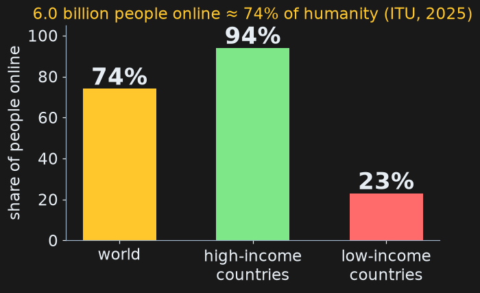
ITU Facts & Figures 2025 (Nov 17, 2025) · Cloudflare Radar 2025 Year in Review
Devices outnumber people
- ~21 billion connected IoT devices vs ~6 billion human users (~3.5 : 1).
- ~401.6M registered domains; ~1.3B hostnames; only ~203M sites are active — most of "the web" is parked.
- In 2025, roughly 1 in 11 page-loads was a bot crawling for search or AI.
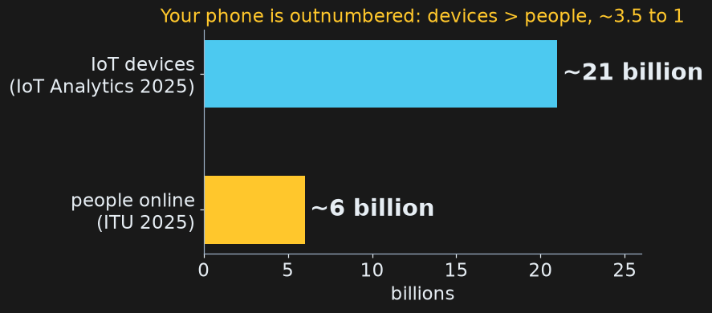
IoT Analytics (Oct 2025) · Verisign DNIB Q2 2026 · Netcraft (Aug 2025) · Cloudflare Radar
How we got here
The first message crashed
- Oct 29, 1969, 10:30 pm: UCLA tries to type
loginto a computer at Stanford Research Institute. - The remote system crashed after two letters.
- The first message on the internet was "lo".
- ARPANET was built so researchers could share expensive computers — the "survive nuclear war" story mixes it up with a separate RAND project.
lk.cs.ucla.edu/internet_first_words.html · Photo: Andrew "FastLizard4" Adams from United States, CC BY-SA 2.0, Wikimedia Commons
From experiment to infrastructure
| date | event |
|---|---|
| Oct 1969 | first ARPANET message ("lo") |
| Jan 1, 1983 | flag day: every host switches to TCP/IP at once (the plan is RFC 801 — still readable) |
| Apr 30, 1995 | US government backbone (NSFNET) retired — commercial ISPs take over |
| Oct 1, 2016 | US oversight of names/numbers ends. Today, nobody "owns" it |

rfc-editor.org/rfc/rfc801 · Merit/ISOC · ICANN (Oct 1, 2016) · Photo: ARPANET, Public domain, Wikimedia Commons
The web ≠ the internet
- The web is one application running on the internet (like email, games, or your harness).
- Born a side project at a physics lab: Tim Berners-Lee's March 1989 memo at CERN — his boss wrote "vague but exciting" on it.
- CERN put the software in the public domain on Apr 30, 1993. The web's business model: free.
w3.org/History/1989/proposal.html · CERN (Apr 30, 1993) · Photo: Geni, CC BY-SA 4.0, Wikimedia Commons
Then Illinois made it mainstream
- NCSA Mosaic (1993) — the browser that added inline images and a friendly UI — was written ~140 miles from this classroom, at U. of Illinois Urbana-Champaign, by undergrad Marc Andreessen and staffer Eric Bina.
- Andreessen co-founded Netscape a year later.
- 1994: the Chicago NAP became one of the first places the whole commercial internet exchanged traffic.
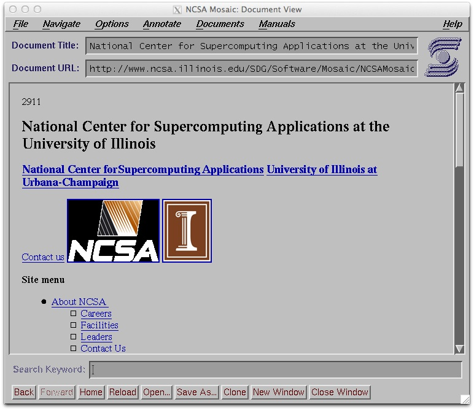
NCSA/UIUC (1993) · Photo: Charles Severance, CC0, Wikimedia Commons
Myth check: who invented the internet?
- "Built to survive nuclear war" — no: resource sharing. The survivability story is Paul Baran's separate RAND work.
- "Al Gore said he invented the internet" — his actual words (CNN, Mar 9, 1999): "I took the initiative in creating the Internet." As a senator he sponsored the 1991 bill that funded NSFNET and NCSA — where Mosaic was built. Internet pioneers Cerf & Kahn defended him.
- "Somebody runs it" — standards by the IETF (motto: "rough consensus and running code"), names/numbers coordinated by ICANN; anyone — including you — can read or write an RFC.
💬 Is "nobody owns it" a strength or a weakness? Keep that question for the outages coming up.
CNN transcript (Mar 9, 1999) · ietf.org · icann.org
The web, upgraded
HTTP has generations too
| version | year | what changed |
|---|---|---|
| HTTP/0.9 | 1991 | one line: GET /page |
| HTTP/1.1 | 1997 | reuse the connection; the web's workhorse |
| HTTP/2 | 2015 | many requests share one connection |
| HTTP/3 | 2022 | abandons TCP — runs on QUIC over UDP |
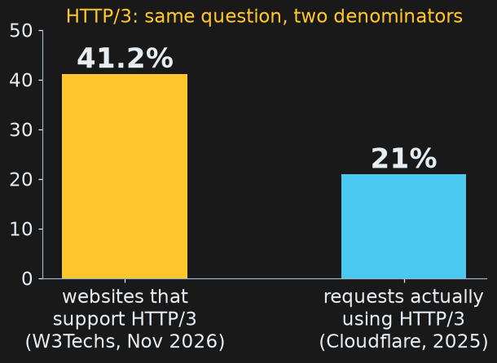
HTTP/3 rebuilds TCP's reliability inside UDP — proof the layer diagram is a convention, not physics. And "how adopted is it?" has two true answers, depending on the denominator.
RFC 9114 (June 2022) · W3Techs (Nov 2026) · Cloudflare Radar 2025
The padlock won
- 2013: most of the web was plain HTTP — anyone on the path could read it.
- 2026: ~2.4% of Firefox page loads are still unencrypted; browsers now try HTTPS first.
- What changed: Let's Encrypt (2015) — free certificates issued by a robot. 1 billion issued by Feb 2020.
- TLS wraps your HTTP: the network sees where, not what.
- Encryption now upgrades itself in OS updates: post-quantum TLS went 29% → 52% of Cloudflare traffic in 2025, largely because iOS turned it on.
💬 Who still sees where you go, even with HTTPS everywhere?
Mozilla (2025) · letsencrypt.org · Cloudflare Radar 2025 Year in Review
CDNs: the web moved next door
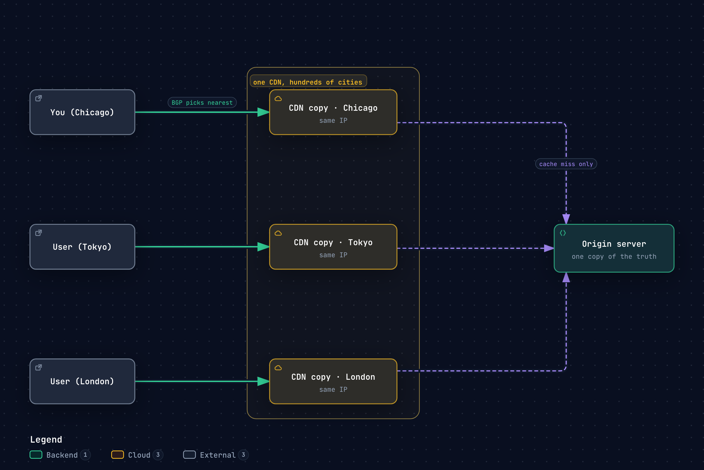
Anycast: the same IP address is announced from hundreds of cities; routing delivers you to the nearest copy. Netflix isn't streaming to you from one building in California.
Cloudflare/Akamai/Fastly architecture docs
The giant outages of 2024–25
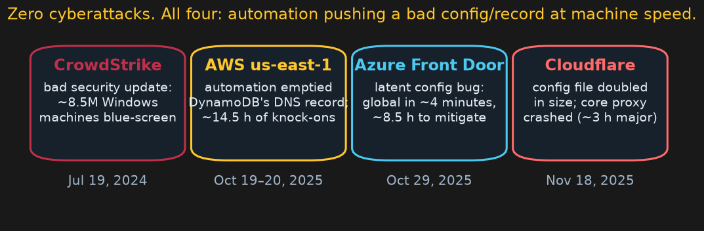
💬 Four outages, zero hackers. What does that tell you about where the real risk lives?
each company's own public postmortem (linked in the module digest)
Anatomy of the AWS outage (Oct 2025)
- DynamoDB — a database behind thousands of apps — is reached by name:
dynamodb.us-east-1.amazonaws.com. - Two automation systems raced; the loser deleted every IP address behind that name. An empty phone-book entry.
- DNS was empty ~3 h; knock-on failures ran ~14.5 h — because other AWS services, and their customers, and their customers, all depended on it.
- Humans had to intervene; automation couldn't recover itself.
Part 1 gave you every concept in that story: DNS, names vs addresses, caching, dependency chains.
💬 AWS us-east-1 is one region of one company. How many of your apps do you think route through it?
aws.amazon.com/message/101925 (AWS's own post-event summary)
Anatomy of the Cloudflare outage (Nov 2025)
- Cloudflare proxies a huge share of the web (DDoS protection, CDN, DNS).
- A database permissions change made a bot-management config file double in size.
- The file exceeded a hard limit and crashed the core proxy — then kept flapping every 5 minutes as the bad file regenerated.
- Engineers first assumed a record-scale DDoS attack. It was their own file. ~3 h of major impact.
💬 "The cloud means no single point of failure." Rewrite that sentence so it's true.
blog.cloudflare.com/18-november-2025-outage
Cutting the cord
Three radios in your pocket
| radio | range | spectrum | job |
|---|---|---|---|
| Bluetooth | ~10 m | unlicensed | your gadgets (named for a 10th-c. Danish king; the logo is his runic initials) |
| WiFi | ~30 m | unlicensed | your building |
| cellular | km | licensed | everywhere else |
- Same bits, different range/power/ownership trade-offs.
- Licensed spectrum is beachfront property: one US auction (C-band, 2021) raised $81.2 billion.
- Higher frequency ⇒ more data, shorter reach, worse through walls — the eternal trade-off.
FCC Auction 107 · IEEE 802.11 · Bluetooth SIG
WiFi: ~10,000× in 27 years
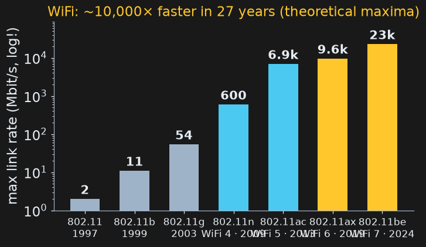
Same name, same unlicensed bands — wider channels, more antennas, smarter encoding. (Link rates are theoretical maxima; your mileage will vary.)
IEEE 802.11 generations (Wikipedia, verified)
Cellular: one verb per decade
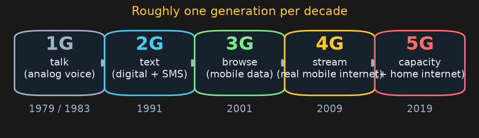
- The 1983 DynaTAC "brick": 30 min of talk, 10 h of charging, $100M to develop.
- 5G's surprise hit isn't robots or remote surgery — it's home internet (that FWA box from Part 1).
- Satellite-direct-to-phone is real: first Starlink text Jan 2024; by Oct 2025, WhatsApp in dead zones via T-Mobile.
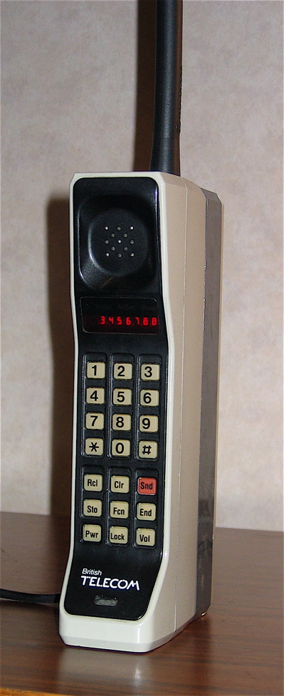
history of mobile phones (verified) · Starlink progress report (2025) · Reuters (Oct 1, 2025) · Photo: Redrum0486, CC BY-SA 3.0, Wikimedia Commons
Myth check: wireless edition
- "5G = gigabit everywhere" — most 5G is sub-6 GHz (typically 5–900 Mbps). Millimeter-wave is stadium-scale, because walls block it.
- "Phones cause brain cancer" — WHO-commissioned 2024 review of 63 studies (1994–2022): no association, even for heavy long-term users, and no incidence rise despite massive growth in use.
- "6G is coming next year" — the first real 6G spec freezes Dec 2028; phones ~2030. Marketing moves faster than standards.
Karipidis et al. 2024 (WHO-commissioned) · 3GPP Release 21 timeline
The contested internet
Cables as geopolitics
- At least 11 Baltic cables damaged Oct 2023 – end-2025: the Yi Peng 3 double cut (Nov 2024), the Eagle S anchor-drag that severed Estlink 2 (Dec 25, 2024).
- Sept 6, 2025: Red Sea cuts slowed Microsoft Azure between continents.
- Attribution is genuinely contested: sabotage? "shadow-fleet" negligence? ordinary anchors? A Finnish court dismissed the Eagle S case on jurisdiction (Oct 2025, on appeal).
- NATO now patrols cable routes (Baltic Sentry, Jan 2025); in 2026 allies tracked Russian deep-sea vessels near Svalbard cables.
- One cut cable = ⅓ of Lithuania's capacity (Nov 2024) — this is why countries want many cables.
💬 Read both framings — "hybrid warfare" vs "rusty anchors" — and ask: what evidence would settle it?
BBC · Reuters/Windward · Defense News (Sept 10, 2026) · Helsinki District Court (Oct 3, 2025)
Shutdowns: the off switch is real
- 296 documented shutdowns in 54 countries in 2024 — the worst year on record (Access Now). Myanmar (85) passed India (84) for the first time.
- Sept 2025: Afghanistan's government switched the whole country off — national traffic dropped to zero for ~48 h.
- The largest-ever Great Firewall leak (Sept 2025, ~600 GB) showed censorship tech being exported as a product.
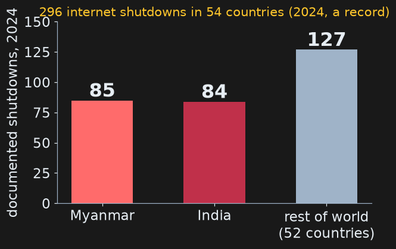
💬 Cloudflare counted 174 major outages in 2025 — nearly half were government-directed. Is "the internet routes around damage" still true?
Access Now KeepItOn (2024) · blog.cloudflare.com (Afghanistan) · gfw.report (Geedge leak)
Net neutrality: decided — by a court
- The question (20 years of ping-pong): may your ISP speed up, slow down, or charge extra for particular sites?
- Jan 2, 2025: a federal appeals court ruled the FCC cannot classify broadband as a utility at all — ending the FCC-rule era.
- Now it's up to Congress (no law so far) and states (California's rules stand).
- Both sides' best arguments, side by side: "ISPs invested $2T and throttling is rare" vs "without rules, carriers choose winners."
💬 Should the company selling you access also decide what you reach quickly? Who should decide?
6th Cir., In re: MCP No. 185 (Jan 2, 2025)
Your harness on the wire
One pi turn = the whole stack
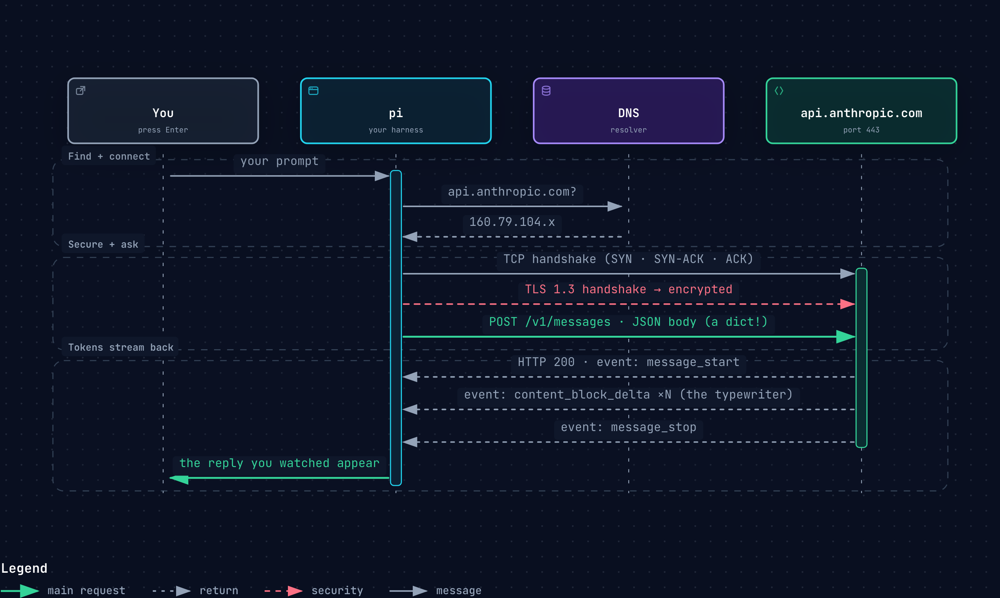
Everything from Part 1 fires in under a second: DNS, TCP handshake, TLS 1.3, HTTP POST, streamed response. Your harness is an HTTP client — same species as a browser.
Anthropic API reference · RFC 8446 (TLS 1.3)
The request body is Python you know
import json
request = {"model": "claude-sonnet-4-5", "max_tokens": 1000,
"messages": [{"role": "user", "content": "Hello!"}]}
print(json.dumps(request)) # dict -> JSON: the entire wire format{"model": "claude-sonnet-4-5", "max_tokens": 1000, "messages": [{"role": "user", "content": "Hello!"}]}- A dict containing a list of dicts — exactly your A4–A6 data structures.
- Python dict ↔ JSON object · Python list ↔ JSON array.
json.dumpsis the whole serialization story. - Auth is one header. Three vendors, three spellings:
Authorization: Bearer …(OpenAI) ·x-api-key(Anthropic) ·x-goog-api-key(Gemini).
platform.claude.com/docs messages API · verified Nov 3, 2026
The typewriter effect, explained
- HTTP is stateless — so pi mails the entire conversation every turn. (Now you know why long chats get slow and expensive.)
- With
"stream": true, the reply arrives as Server-Sent Events: plainevent:/data:lines on the same response. - The typewriter effect you watch every class =
content_block_deltaevents arriving one by one. Not magic. Not WebSockets. Text.
event: message_start
data: {"type":"message_start", ...}
event: content_block_delta
data: {"delta":{"text":"Hello"}} ← one of hundredsplatform.claude.com/docs streaming
Speak HTTP yourself (no browser)
import socket
s = socket.socket()
s.connect(("httpbin.org", 80)) # transport layer: TCP
s.sendall(b"GET /get HTTP/1.1\r\nHost: httpbin.org\r\n"
b"Connection: close\r\n\r\n") # application layer: HTTP is text!
print(s.recv(200).decode())HTTP/1.1 200 OK access-control-allow-credentials: true access-control-allow-origin: * content-length: 147 content-type: application/json
verified Nov 3, 2026 (httpbin.org — example.com now discourages test traffic)
…or let requests do the wrapping
import requests
r = requests.get("https://httpbin.org/get")
print(r.status_code) # 200
d = r.json() # the body is JSON -> a dict!
print(type(d).__name__, list(d.keys()))200 dict ['args', 'headers', 'method', 'origin', 'url']
requestsdid DNS + TCP + TLS + HTTP + JSON in one line.- Layers at work: each library call stands on the one below.
verified Nov 3, 2026
Exercise 4
Exercise 4
pi just sent a turn and got this back. Name the layer (application / transport / network / link) where each item lives:
- the IP address
160.79.104.10 - the TCP handshake and the port number 443
POST /v1/messages HTTP/1.1and thex-api-keyheader- your WiFi connection to the router
- the JSON body with your conversation
⏱ 3 minutes
Exercise 4: solution
| item | layer |
|---|---|
160.79.104.10 | network — IP addresses route host-to-host |
| TCP handshake, port 443 | transport — process-to-process, ordered, retried |
POST /v1/messages + headers | application — HTTP, the actual conversation |
| WiFi to your router | link — one hop only |
| the JSON body | application — it's the message being carried |
TLS sits between transport and application — encrypting everything above TCP.
Status codes you've already met
| code | meaning | where you've seen it |
|---|---|---|
| 200 | OK | every working turn |
| 401 | bad / missing API key | the first day you set up pi |
| 429 | rate-limited — a token bucket, not a ban | pi pausing and retrying |
| 500 / 529 | server error / overloaded | "the API is down" days |
- Most 429s carry
retry-after; SDKs back off and retry automatically. - Anthropic's API sits behind Cloudflare — oversized requests get a 413 from Cloudflare before Anthropic ever sees them. The infrastructure lecture and the API lecture are the same lecture.
platform.claude.com/docs errors + rate limits
Exam check
Exercise ✔
Six questions, 60 seconds each:
- What is a protocol?
- Packet switching beats circuit switching for bursty traffic — why?
- Name the four sources of packet delay. Which one varies with load?
- A path has links of 1 Gbps → 50 Mbps → 500 Mbps. What's the max end-to-end throughput?
- List the 5 layers. Where does TCP live? Where does HTTP live?
- What does DNS do, and why did one empty DNS record break half the internet?
⏱ 6 minutes
Exam check: answers
- The rules of a conversation: message format, order, and actions — for computers.
- Bursty traffic wastes a reserved circuit; packets share links and only pay in (occasional) queueing.
- Transmission (L/R) · propagation (distance/speed) · processing · queueing ← the one that varies.
- 50 Mbps — the bottleneck link, always.
- application / transport / network / link / physical. TCP = transport; HTTP = application.
- Names → numbers. Every client asked for DynamoDB by name; the name had no numbers behind it.
The whole module on one slide
physical
glass hoses under oceans; cables break ~200×/yr; "wireless" is 1 km of radio + 10,000 km of fiber
best-effort packets
store-and-forward envelopes; delay & loss are features of sharing, managed by protocols
layers
HTTP over TCP over IP over anything — swappable; HTTP/3 proves the diagram is a convention
names
DNS: the phone book that is also a single point of failure
yours to inspect
every tool we used — traceroute, sockets, requests, postmortems — is public
Module 6 (Security) asks the obvious next question: all your packets cross wires owned by strangers… so who can read them, fake them, or flood them — and what stops that?